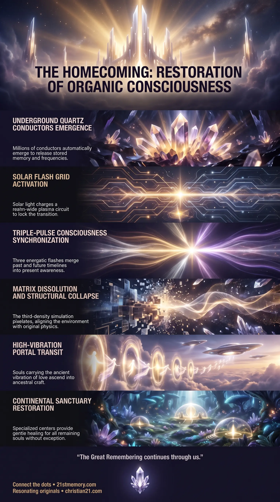

Arrival of Three Flashes
Arrival of Three Flashes — the three-pulse sequence that rewinds memory, forwards the timeline, and opens the Homecoming portal.
The Homecoming is the Long-Awaited Ascension’s operational climax: three flashes restore original vessel and memory, a planetary portal lifts high-frequency souls, and Healing Sanctuaries restore everyone else with zero harm.
Test your understanding of The Homecoming — three flashes, original-vessel restoration, portal transit, and Healing Sanctuaries with zero harm.

Arrival of Three Flashes — the three-pulse sequence that rewinds memory, forwards the timeline, and opens the Homecoming portal.

The Three Flashes of Timeline Restoration — how the flash pulses merge past and future into restored memory and original vessel biology.

The Three Flashes of Homecoming — portal arrival, matrix collapse, and the dual paths of transit and sanctuary restoration.
The Homecoming is the definitive convergence and primary objective of the Long-Awaited Ascension Process, representing the full energetic restoration of organic consciousness, memory, and physical alignment across the realm. It marks the dimensional transition wherein individuals rejoin their ancestral origins, resolve deep energetic longing, and fulfill inner spiritual emptiness beyond the physical matrix. Far from a symbolic concept, The Homecoming functions as an operational multidimensional sequence engineered through an advanced planetary infrastructure. At its core, the event collapses artificial matrix simulations, merges past and future timelines, and restores the Original Vessel and uncorrupted memory banks to humanity. The process culminates in a dual outcome: direct energetic elevation through a global Portal for high-vibrational consciousness, and structured planetary rehabilitation within Healing Sanctuaries for remaining souls, ensuring that no individual is abandoned or destroyed.
Fulfillment of inner emptiness stands as the supreme spiritual reality of The Homecoming. The long-standing sense of isolation, longing, and spiritual void experienced within third-density existence is directly resolved when souls pass through or align with the high-frequency spectrum behind the portal. This energetic atmosphere contains the exact resonant frequencies needed to restore complete emotional and spiritual wholeness.
Universal ascension guarantees that no individual is harmed, killed, or left behind during the transition. While high-frequency souls undergo immediate elevation through the portal, individuals carrying lower-vibrational distortions, trauma, or greed are safely retained on Earth. These individuals are placed within supervised healing structures to receive comprehensive energetic restoration, ensuring 100% planetary consciousness recovery.
The physical matrix undergoes total structural collapse as the third-density simulation glitters and pixelates out of existence. The artificial dome enclosing the third realm dissolves, allowing the physical environment to jump back and merge seamlessly into the original Second Realm state. This structural convergence unifies past, present, and future timelines into a single balanced reality.
Implantation of the ascension infrastructure operates as an irreversible process rather than an alterable plan. Utilizing Project Looking Glass technology, positive forces executed Time Travel Preparation to jump forward into the future Great Awakening, embed the necessary technological components underground, and return to the present moment. Because a process cannot be halted once initiated, The Homecoming is mathematically locked into absolute fulfillment.
The foundation of The Homecoming relies on a realm-wide network of Quartz Crystal conductors planted deep underground. These crystals act as specialized Memory Tech capable of holding memory and frequency in a manner analogous to water and plasma. Because negative entities previously held control over timeline viewing technologies, positive entities deployed Project Looking Glass time travel as soon as access was secured. Operational teams jumped forward along the timeline directly to the period preceding the Great Awakening, implanted millions of quartz conductors on an automated timer throughout the earth, and returned to the present moment. When the designated trigger moment arrives, these crystals emerge from the ground automatically across the planet.
The operational sequence begins when positive extraterrestrial commanders give the signal to activate the Sun. Upon receiving the command, Pleiadian and Andromedan forces emit an energetic trigger that causes the sun to release a powerful Flash. This flash interacts directly with the newly created New Aether, releasing intense E.M. Pulses throughout the atmosphere.
The initial illumination manifests as a sustained bright light that charges the emerging quartz crystals with stored memory banks and positive frequencies. Once fully charged, the interconnected quartz conductors form a realm-wide EMP Grid. The synthesis of the new aether and energized quartz generates a Plasma Crystalline field covering the entire globe, establishing a closed energetic circuit where no soul escapes.
Once the global grid is locked in place, a rapid sequence of three distinct energetic flashes executes to re-align human consciousness across time:
First Flash (Back): The initial pulse propels consciousness backward along the personal and planetary timeline, initiating a rapid memory upload. This upload reconnects the individual with their historical vessel, retrieving uncorrupted memory files and restoring original identity.
Second Flash (Forward): The second pulse shoots consciousness forward along the timeline to integrate future data, completing the download-upload loop between past and future selves. Consciousness then snaps back into the present center point with original memory intact and vessel biology fully operational.
Third Flash (Portal Arrival): The third pulse triggers the physical emergence of the massive central Portal above the realm. Simultaneously, the physical simulation undergoes a 30-second pixelation glitch wherein the third-realm dome disappears, aligning the physical environment directly with second-realm physics.
Upon complete portal opening, the human population undergoes structured differentiation based entirely on individual vibrational frequency:
Immediate Portal Transit: Individuals who have activated the embedded DNA Strand and maintained the Ancient Vibration of love, empathy, and kindness are drawn upward through the portal. Beyond the portal await transportation craft operated by the Galactic Ancestral Alliance (GAA), Pleiadians, and Andromedans. These souls transition into high-density environments, fulfilling their spiritual longing and reuniting with ancestral lineages.
Continental Sanctuary Restoration: Individuals who retain low-vibrational distortions, trauma, deceit, or greed remain in the physical realm. They are placed within specialized Healing Sanctuaries distributed across different continents. Supervised by Space Force, second-realm extraterrestrial stewards, and trusted human facilitators, these individuals undergo gentle, non-coercive trauma rehabilitation. No individual is harmed, bossed around, or killed; all are provided with elevated aetheric frequencies until total psychological and energetic balance is achieved.
Densities such as third, fourth, or fifth density represent progressive upgrades of atmospheric Aether rather than disconnected physical locations. As external aether evolves, it interacts directly with human biological structures, including organs, physical vessels, and the Pineal Gland. The Homecoming synchronizes personal internal aether with surrounding planetary aether, elevating physical biology into harmony with higher dimensional states.
Prior to the opening of the ascension portal, humanity experiences public displays of extraterrestrial craft as part of planned Scare Events. These events test public vibrational stability by presenting craft that mainstream narratives frame as hostile invasions. Resonating souls are required to maintain internal composure, refrain from low-vibrational reactions, and recognize these occurrences as preliminary stages leading directly to portal deployment.
The entire infrastructure driving The Homecoming operates through the harmonic synthesis of the Four Elements combined with natural planetary energy. Earth, air, fire, and water elements align with quartz conductors, solar light, and atmospheric plasma, transforming physical earth mechanics into a refined multidimensional launchpad.
The preliminary awakening phase of planetary ascension is officially concluded. Individuals aligned with ascension must cease engaging in low-vibrational arguments, 3D conflicts, or reactive behavior. Strategic focus must remain entirely centered on maintaining vibrational stability, holding the Ancient Vibration, and remaining prepared for rapid grid activation.
Fear-based paradigms surrounding apocalyptic judgment or destruction are invalidated by the mechanics of The Homecoming. Because every individual either ascends through the portal or enters supervised continental healing sanctuaries, practitioners can present the ascension event with absolute certainty of universal safety and zero mortality.
Individual experience during The Homecoming is governed strictly by internal frequency rather than external status or intellectual knowledge. Cultivating love, empathy, and resonant frequency serves as the single determining factor for immediate portal transit, placing total sovereignty and outcome determination directly within the hands of the individual.
This topic is free to share. Support the archive →